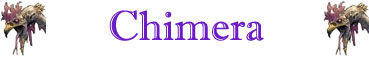

2 (scaglie di drago posizioni laterali)
6 (pelle di capra posizione alle spalle)
Soffio della Chimera;
Resistenza Moderata ad un Elemento;

|
|
Climate/Terrain | Montagne o Colline |
| Frequency | Rare | |
| Organization | Solitary | |
| Activity Cycle | Any | |
| Diet | Carnivore | |
| Intelligence | Semi-Intelligent (4) | |
| Treasure | Regolare | |
| Alignment | Chaotic Evil | |
| No. Appearing | 1d12: (1-9) 1 (10-11) 2 (12) 3 | |
| Armor Class | 5 (pelle di leone
posizioni frontali) 2 (scaglie di drago posizioni laterali) 6 (pelle di capra posizione alle spalle) |
|
| Movement | 9, Volare 18 | |
| Hit Dice | 9 | |
| Thac0 | 11 | |
| No. of Attacks | artiglio/artiglio/corna (capra)/morso (leone)/morso (drago) | |
| Damage / Attacks | 1d4(taglio)/1d4(taglio)/1d6+2(punta)/1d8+2(taglio)/1d10+2(taglio) | |
| Special Attacks | Istinto Predatorio; Soffio della Chimera; |
|
| Special Defenses | Attenzione Straordinaria; Resistenza Moderata ad un Elemento; |
|
| Special Weakness | Nessuna | |
| Magic Resistance | None | |
| Senses | Vista Comune, Oscurovisione, Sensi Superiori | |
| Size | Large (3 m. lunghezza) | |
| Morale | Elite (14) | |
| XP value | 2814 |
Descrizione
La chimera è una creatura a tre teste. Questo essere infatti possiede una testa da drago, una testa di leone ed una testa di capra. Le zampe frontali della chimera sono visibilmente le zampe di un grosso leone mentre dai fianchi della creatura spuntano due ali tipiche delle creature draconiche. Una chimera è alta circa 2 metri al garrese, è lunga circa 3 metri e pesa approssimativamente 2.000 kg. La testa da drago della chimera può essere di colore rosso, nero, blu e bianco (vedi soffio).
Combat
La chimera è un
bizzarro predatore a tre teste che caccia sia sul terreno che in volo. Può
sconfiggere anche il più forte degli avversari con una raffica di artigli e di
zanne. Si tratta di un nemico letale che preferisce cogliere la preda di
sorpresa. Spesso scende in picchiata dal cielo o rimane nascosta finché non
carica. La testa di drago può utilizzare l'arma a soffio invece del morso. Più
chimere attaccano in gruppo.
ISTINTO PREDATORIO
(Moderate Special
Ability):
La creatura possiede un forte
istinto predatorio, per tale motivo costei riceve un
bonus costante di +1 alla Thac0
con i suoi attacchi.
SOFFIO DELLA CHIMERA (Superior Special Ability): In luogo di attaccare la testa di drago può soffiare su un bersaglio selezionato che si trovi entro 12 metri di distanza. Il tipo di soffio dipende dal colore della testa della di drago della chimera come indicato nella seguente tabella: 1d12 (1-3) Drago Rosso - Fuoco; (4-6) Drago Nero - Acido; (7-9) Drago Blu - Elettricità; (10-12) Drago Bianco - Freddo. Il soffio che ha un fattore iniziativa pari a +1, provoca 3d6+2 danni dell'elemento corrispondente (natura magica) dimezzabili con un tiro salvezza contro soffio. La chimera può nel medesimo round effettuare gli altri attacchi in corpo a corpo contro una diversa creatura. Una volta utilizzato, la creatura non potrà riutilizzare il soffio nel round di combattimento immediatamente successivo.
ATTENZIONE STRAORDINARIA (Lesser Special Ability): E' estremamente difficile sorprendere questa creatura. La stessa risulterà sorpresa solo con un risultato di 1 naturale sul tiro della sorpresa (indipendentemente dai modificatori applicabili a quel tiro).
RESISTENZA MODERATA AD UN ELEMENTO (Typical Ability): Il corpo della creatura è particolarmente resistente ai danni dell'elemento corrispondente al tipo di soffio di cui dispone (Drago Rosso - Fuoco e Calore; Drago Nero - Acido; Drago Blu - Elettricità; Drago Bianco - Freddo), per tale motivo la creatura subirà solo il 66% (per difetto) di tutti i danni provocati nei suoi confronti dal suddetto elemento sia di natura magica che naturale.
Habitat/Society
Essendo un ibrido la chimera ha acquisito tratti comportamentali propri di tutte e tre le creature di cui si compone. La testa di capra impone alla creatura di passare tempo a brucare ed a mangiare vegetali e radici. Questa dieta, però, non soddisfa la parte di leone e di drago che, invece, desiderano costantemente carne cruda. Per tale motivo, ogni due o tre giorni la chimera è solita andare a caccia. Essendo una creatura semi-intelligente e di natura malvagia la chimera, quindi, non esita a considerare come proprie prede creature civilizzate attaccando piccoli villaggi od abitazioni isolate. La parte di drago, inoltre, spinge questa creatura a vivere in caverne e dimore rocciose che spesso cerca sulle vette delle montagne od in zone difficilmente accessibili senza volare. Sempre la parte di drago spinge quest'essere a trasportare nella sua tana i cadaveri delle proprie vittime per accumulare tesori anche se lo stesso non è in grado di utilizzare o commercializzare quanto trovato.
Ecology
La chimera riveste il ruolo di predatore di alto rango nell'ecosistema. Quando, però, le prede scarseggiano, la chimera può sopravvivere come erbivoro pascolando con la propria testa da capra.
Mystical Resource Sourge
(Corna e Scaglie) Quantità: 2, Presenza 50% - Scuola di Magia :
Enchantment
- Qualità della Risorsa: Common.
Mystical Resource Sourge
(Giandola Fuoco) Quantità: 1, Presenza 66% - Effetto Particolare:
Fuoco
- Qualità della Risorsa:
Common.
Mystical Resource Sourge
(Cuore) Quantità: 1, Presenza 50% - Scuola di Magia : Enchantment
- Qualità della Risorsa:
Rare.